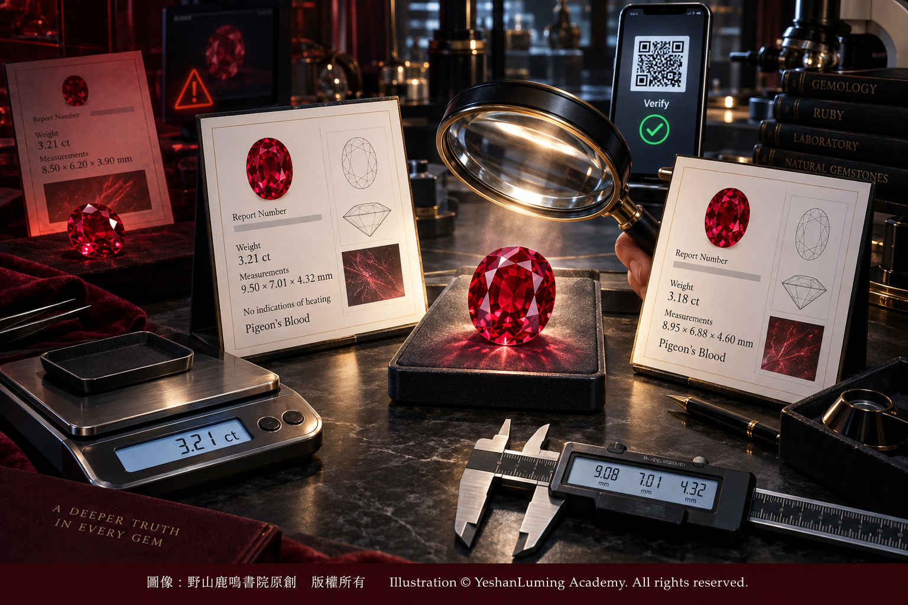

國際證書實戰解密 · 看懂紅寶石的身份證與隱藏陷阱Decoding International Gemstone Reports in Practice · Understanding a Ruby’s Identity Card and Its Hidden Traps
The World of Gemstones · Ruby SeriesDecoding International Gemstone Reports in Practice · Understanding a Ruby’s Identity Card and Its Hidden Traps
The World of Gemstones · Ruby Series國際證書實戰解密 · 看懂紅寶石的身份證與隱藏陷阱
寶石世界·紅寶石篇
寶石世界·紅寶石篇（107）The World of Gemstones · Ruby Series (107)
在經歷了產地挑選、看懂了有燒與無燒的秘密之後，你終於在珠寶店裡看中了一顆令人心動的紅寶石。此時，商家深諳你的心理，微笑著拿出一張印滿英文、帶有精美防偽標識的國際鑑定報告，對你說：「放心吧，這顆寶石帶有國際知名機構的證書。」
那一張張看似權威的紙張，往往打破了消費者最後的心理防線。然而，作為一名寶石專家，我必須冷靜地提醒你：證書只是寶石的身份證，但它不是品質保證書，更不是價格保證書。如果你看不懂上面的英文術語、處理說明與附註，它也可能成為讓你放鬆警惕的「迷魂陣」。
在動輒涉及數萬、數十萬，乃至數百萬美金的彩色寶石交易中，學會解讀證書上的每一個字，是每一位真正藏家必須掌握的實戰硬功夫。
在當今的彩色寶石市場中，美國寶石學院（GIA）與瑞士寶石研究鑑定所（GRS），是消費者經常接觸、也具有廣泛國際影響力的兩家鑑定機構。
GIA 的彩色寶石報告風格嚴謹，重視寶石的天然或合成屬性、種類、可檢測到的處理，以及在相應服務中對產地和特定商業顏色名稱作出判斷。GRS 則在高端彩色寶石市場具有很大影響力，對紅寶石、藍寶石等寶石的產地、加熱及殘留物情況，採用了較為細緻、也更為市場熟悉的表達方式。
除此之外，瑞士寶石學院（SSEF）、古柏林寶石實驗室（Gübelin Gem Lab）以及美國寶石實驗室（AGL）等機構，在國際高端彩色寶石交易和拍賣市場中同樣具有重要地位。本篇先以 GIA 與 GRS 為例，介紹閱讀紅寶石證書的基本方法。
當你拿到一張證書時，第一步要做的，不是急著尋找「無燒」「緬甸」或者「鴿血紅」幾個令人興奮的字眼，而是要先驗證這張證書本身的真偽，並確認它是否真的屬於眼前這顆紅寶石。
在利益的驅使下，市場上偽造證書、塗改證書和「套牌」的伎倆層出不窮。所謂套牌，就是商家拿一張真正的國際寶石鑑定報告，去搭配另一顆顏色相似，但淨度、重量、尺寸、產地或處理方式完全不同的寶石。
在經歷了產地挑選、看懂了有燒與無燒的秘密之後，你終於在珠寶店裡看中了一顆令人心動的紅寶石。此時，商家深諳你的心理，微笑著拿出一張印滿英文、帶有精美防偽標識的國際鑑定報告，對你說：「放心吧，這顆寶石帶有國際知名機構的證書。」
那一張張看似權威的紙張，往往打破了消費者最後的心理防線。然而，作為一名寶石專家，我必須冷靜地提醒你：證書只是寶石的身份證，但它不是品質保證書，更不是價格保證書。如果你看不懂上面的英文術語、處理說明與附註，它也可能成為讓你放鬆警惕的「迷魂陣」。
在動輒涉及數萬、數十萬，乃至數百萬美金的彩色寶石交易中，學會解讀證書上的每一個字，是每一位真正藏家必須掌握的實戰硬功夫。
在當今的彩色寶石市場中，美國寶石學院（GIA）與瑞士寶石研究鑑定所（GRS），是消費者經常接觸、也具有廣泛國際影響力的兩家鑑定機構。
GIA 的彩色寶石報告風格嚴謹，重視寶石的天然或合成屬性、種類、可檢測到的處理，以及在相應服務中對產地和特定商業顏色名稱作出判斷。GRS 則在高端彩色寶石市場具有很大影響力，對紅寶石、藍寶石等寶石的產地、加熱及殘留物情況，採用了較為細緻、也更為市場熟悉的表達方式。
除此之外，瑞士寶石學院（SSEF）、古柏林寶石實驗室（Gübelin Gem Lab）以及美國寶石實驗室（AGL）等機構，在國際高端彩色寶石交易和拍賣市場中同樣具有重要地位。本篇先以 GIA 與 GRS 為例，介紹閱讀紅寶石證書的基本方法。
當你拿到一張證書時，第一步要做的，不是急著尋找「無燒」「緬甸」或者「鴿血紅」幾個令人興奮的字眼，而是要先驗證這張證書本身的真偽，並確認它是否真的屬於眼前這顆紅寶石。
在利益的驅使下，市場上偽造證書、塗改證書和「套牌」的伎倆層出不窮。所謂套牌，就是商家拿一張真正的國際寶石鑑定報告，去搭配另一顆顏色相似，但淨度、重量、尺寸、產地或處理方式完全不同的寶石。
要識破這種套牌，首先必須核對證書上的重量（Weight）與尺寸（Measurements）。
證書上的紅重量通常以克拉（Carat，縮寫為 ct）記錄，尺寸則以毫米（Millimeter，縮寫為 mm）記錄寶石的長、寬、高。對裸石而言，重量通常是實際稱量所得；對已經鑲嵌的寶石，有些報告可能只能根據尺寸和鑲嵌狀態作出估算，因此必須留意證書上的具體表述。
如果複秤後的重量，或者重新測量的尺寸與證書明顯不符，就要立即提高警惕。即使只有小幅差異，也應先排除電子天平的校準精度、數據四捨五入、鑲嵌狀態，以及寶石在出具證書後是否經過重新拋光等因素，再請原鑑定機構或獨立寶石學家進一步確認。
尺寸往往比顏色更加難以冒充。兩顆紅寶石可能看起來都是橢圓形，也可能具有相似的紅色，但要讓長、寬、高三組數據都完全吻合，並不是一件容易的事。因此，重量和尺寸必須結合起來核對，不能只看其中一項。
現代國際鑑定機構的報告通常帶有獨一無二的報告編號（Report Number），不少新版報告還帶有二維碼。最安全的做法，是通過二維碼、報告編號或者鑑定機構官方網站上的 Report Check、Verify 系統，直接查詢該報告的官方資料。
核對時不能只看報告號碼，還要比較出具日期、寶石種類、重量、尺寸、形狀、顏色描述、處理方式和產地結論等內容。如果官方頁面附有寶石照片或影片，也應一併核對。
但是，即使所有文字資料都能對上，也不能因此完全放棄對實物的檢查。某些寶石顏色近似、切工相似，甚至重量也可能非常接近。對於價格昂貴的紅寶石，最穩妥的辦法仍然是請合格的獨立寶石學家檢查，必要時重新送交權威實驗室複驗。
當確認證書真實，並且證書確實屬於眼前這顆寶石之後，接下來才進入最核心的「解碼環節」。
對紅寶石而言，最值得注意的內容包括：寶石是否天然、是否經過加熱、是否存在外來物質殘留或裂隙充填、是否經過擴散處理，以及證書如何描述它的顏色與產地。
首先要尋找的，是關於「燒」的說明。
如果 GIA 報告中寫著 No indications of heating，意思是實驗室在現有檢測範圍內，沒有發現紅寶石經過加熱的跡象。這就是市場上通常所說的「無燒」紅寶石。
但是，「沒有發現加熱跡象」是實驗室根據現有設備、樣品狀態和可觀察證據作出的專業結論。它並不等於有人親眼證明這顆寶石從開採到今天從未接觸過任何熱源。因此，理解證書時應尊重實驗室原文，不要任意把它誇大成超出檢測能力之外的絕對保證。
如果報告中寫著 Indications of heating，就表示實驗室發現了加熱處理的證據。加熱本身是紅寶石市場中歷史悠久的優化方式，目的通常是改善顏色、透明度或者寶石的整體外觀。
但「有燒」並不代表所有紅寶石都處於同一等級。僅有傳統加熱，與加熱後裂隙中存在外來物質殘留，甚至經過鉛玻璃大量充填，在市場價值、耐久性和信息披露上都有本質區別。因此，看到 Indications of heating 之後，還必須繼續閱讀報告中的 Comments 或其他附註。
如果手上拿到的是 GRS 報告，它對紅寶石加熱及殘留物的說明，通常會使用一套市場較為熟悉的代碼。由於報告年代、版本和寶石實際情況可能不同，閱讀時仍應以該張證書背面的官方說明及鑑定機構當時公布的規則為準。
一般而言，GRS 報告中常見的基本代碼包括：
- N：沒有發現熱處理跡象，也就是市場通常所說的無燒。
- H：經過加熱，但沒有檢測到殘留物。
- H(a)：經過加熱，裂隙中檢測到極微量殘留物。
- H(b)：經過加熱，裂隙中檢測到少量殘留物。
- H(c)：經過加熱，殘留物程度高於 H(b)，屬於通往更顯著殘留程度的過渡等級。
- H(d)：經過加熱，裂隙中存在顯著殘留物。
H、H(a)、H(b)、H(c)與 H(d)之間的差別，不只是幾個英文字母的不同，而是會直接影響紅寶石的稀有性、市場接受度和價格。
市場上所謂的「老燒」，通常是指較為傳統的加熱處理，並且沒有發現明顯的外來物質殘留。這是一種商業上的通俗說法，並不是所有國際實驗室共同採用的嚴格科學名詞。因此，不能看到一個 H 就簡單宣稱「百分之百老燒」，仍應按照證書原文解讀。
同樣需要注意的是，H(c)或 H(d)表示裂隙中的殘留物已經較為明顯，但不能僅憑這兩個代碼，直接把寶石等同於鉛玻璃充填紅寶石。
助熔劑殘留與鉛玻璃裂隙充填，雖然都可能出現在紅寶石的裂隙之中，卻不是完全相同的處理概念。如果寶石存在鉛玻璃或者其他高密度玻璃的大量充填，負責任的鑑定報告通常會作出更明確的披露。購買者必須閱讀完整附註，不能只看一個縮寫便自行下結論。
比傳統加熱更需要警惕的，是擴散處理和嚴重裂隙充填。
如果證書中明確出現 Beryllium treatment、Beryllium diffusion、H(Be)，或者其他表示外來元素擴散的說明，就代表這顆寶石不只是經過普通加熱，而是利用高溫讓外來元素進入寶石，改變或改善其顏色。
這類擴散處理與普通加熱在市場定位上不能混為一談。不同機構、不同年代的證書，可能使用不同縮寫，因此最安全的辦法不是死記某一組英文字母，而是閱讀證書附帶的完整英文解釋，必要時直接向出具報告的實驗室查詢。
如果證書披露寶石經過鉛玻璃裂隙充填，也必須格外慎重。這類處理可以大幅改善低品質紅寶石的透明度和外觀，但填充物可能受到高溫、酸液、超聲波清洗及珠寶維修過程的影響，耐久性與天然紅寶石或者傳統加熱紅寶石有明顯差別。
一旦發現擴散處理、大量玻璃充填或者其他重度改善，就不能再按照無燒或傳統加熱紅寶石的標準估價。它們的稀有性、市場接受度及長期收藏價值通常會大幅下降，購買時必須充分披露，並根據實際處理方式重新衡量價格。
解開了優化處理的密碼，接下來還要看懂證書如何描述紅寶石的靈魂——顏色。
許多消費者購買紅寶石時，只要看到證書的顏色欄寫著 Red，便感到失望，甚至質問商家：「這不是鴿血紅嗎？為什麼證書不寫？」
這個問題的背後，是實驗室鑑定語言與市場商業語言之間的差別。
GIA 彩色寶石報告的主要任務，是鑑定寶石的種類、天然或合成屬性、可檢測到的處理，以及在相應服務中對產地和某些特定商業顏色名稱作出判斷。它不像鑽石的 D至Z 顏色分級那樣，為所有紅寶石建立一套公開、固定而完整的品質等級階梯。
在 GIA 報告中，Color 欄可能使用 Red、Purplish Red、Vivid Red 等詞語描述寶石的顏色。具體表達取決於寶石本身、報告種類以及當時採用的報告格式。因此，不能認為 GIA 的 Color 欄永遠只會寫 Vivid Red 或 Deep Red，也不能簡單地把某一個顏色詞直接換算成固定價格。
對符合特定條件的紅寶石，GIA 報告可能附加業內所稱的 Pigeon’s Blood，也就是「鴿血紅」顏色名稱。
這項判斷不只是觀看紅寶石是否「夠紅」，還會綜合考慮它是否具有鮮艷而高度飽和的紅色、鐵含量是否較低、是否具有較強的紅色螢光，以及其他實驗室觀察結果。因此，「鴿血紅」不是商家憑肉眼看到一顆鮮紅的寶石，便可以隨意加上的冠冕。
GRS 的做法更接近國際彩色寶石市場長期形成的商業表達。如果一顆紅寶石符合其標準，報告中可能標註 Vivid Red (GRS type “Pigeon’s Blood”)，或者使用相應的鴿血紅說明。
這種醒目的顏色名稱，往往會提高寶石在市場上的關注度和接受度。但真正變得昂貴的，不是證書上的那幾個英文字，也不是那張紙本身，而是符合相應顏色、天然屬性、處理狀況、產地、重量、淨度與切工等綜合條件的紅寶石。
作為一名理性的藏家，千萬不要盲目迷信「鴿血紅」三個字。不同鑑定機構對商業顏色名稱的判斷標準並不完全相同；即使是同一家機構，隨著研究方法、報告版本和市場規則的發展，具體判斷尺度也可能調整。
更重要的是，兩顆同樣帶有「鴿血紅」說明的紅寶石，仍可能在明暗程度、色調均勻性、透明度、淨度、螢光反應、切工比例和肉眼美感上存在明顯差別。證書只能告訴你實驗室的專業結論，不能代替你親眼觀察寶石。
真正優秀的紅寶石，應當在不同光線下仍然保持鮮活的紅色，而不是只在珠寶店特別設計的射燈下燦爛奪目。購買時最好在日光、普通室內白光和較暖的燈光下分別觀察，留意寶石是否過暗、發黑、偏紫、偏棕，以及是否存在明顯漏光、色帶和滅光區。
證書很重要，但證書不能替你審美；產地很重要，但產地不能替你決定品質；「鴿血紅」很重要，但它也不能掩蓋淨度、切工、重量和處理方式上的缺陷。

Click to enlarge
看懂了這張身份證，你便能從一個盲目跟風的愛好者，逐漸成為一個讓商家不敢輕視的專業買家。證書上的字母不再是枯燥的英文，而是這顆寶石歷經億萬年地質變遷，再經過人類切磨、加熱或其他科技處理之後，留在紙上的真實自白。
為了方便讀者將來在核對證書、比較寶石或進行採購時快速查閱，下面把本文涉及的核心術語綜合整理如下。
一、證書與寶石的基本核對
- Report Number：報告編號。應到出具報告的鑑定機構官方網站核實。
- Weight：重量，通常以克拉記錄，縮寫為 ct。
- Measurements：尺寸，通常以毫米記錄寶石的長、寬、高，縮寫為 mm。
- Identification：寶石鑑定結論，用來確認寶石種類及其天然或合成屬性。
- Origin：產地結論。只有提供產地鑑定服務並且能夠作出結論的報告，才會列出產地。
- Comments：附註。許多重要的處理方式、商業顏色名稱及限制條件，可能出現在這一欄。
二、GIA 報告中常見的加熱說明
- No indications of heating：沒有發現加熱處理的跡象，市場通常稱為無燒。
- Indications of heating：發現加熱處理的跡象。仍需繼續閱讀 Comments 等附註，確認是否涉及其他處理或外來物質。
三、GRS 報告中常見的紅寶石加熱代碼
- N：沒有發現熱處理跡象。
- H：經過加熱，沒有檢測到殘留物。
- H(a)：經過加熱，檢測到極微量殘留物。
- H(b)：經過加熱，檢測到少量殘留物。
- H(c)：經過加熱，殘留物程度高於 H(b)，屬過渡等級。
- H(d)：經過加熱，檢測到顯著殘留物。
上述代碼應以證書出具時所附的 GRS 官方說明為準。H(c)或 H(d)不能自動等同於鉛玻璃充填；如果涉及鉛玻璃、擴散或者其他特殊處理，還要查看報告中的完整披露。
四、需要格外注意的處理說明
- Beryllium treatment / Beryllium diffusion / H(Be)：涉及鈹或其他外來元素的擴散處理，不能視為普通傳統加熱。
- Lead-glass filling / Glass-filled / Fissure filling：涉及玻璃或其他物質的裂隙充填，應進一步確認充填物種類、程度、耐久性及保養限制。
- Clarity Enhancement：淨度改善的統稱，必須繼續查看使用了什麼材料和方法，不能只憑這兩個英文單詞判斷價值。
五、顏色與鴿血紅說明
- Red：紅色，是對寶石顏色的基本描述，不代表品質低劣。
- Purplish Red：帶紫色調的紅色。
- Vivid Red：鮮艷紅色，但不能只憑這一項判斷寶石的全部品質和價值。
- Pigeon’s Blood：鴿血紅，是特定實驗室根據自身標準作出的業內顏色名稱判斷，不是全球完全統一的獨立品質等級。
- Vivid Red (GRS type “Pigeon’s Blood”)：GRS 報告中可能使用的鴿血紅顏色表述。
最後必須記住：先查證書真偽，再核對證書與寶石；先看天然或合成，再看處理方式；先讀完整附註，再看產地與商業名稱；最後才把證書結論、寶石實物和成交價格放在一起，作出自己的判斷。
真正專業的買家，從來不是只會尋找證書上最漂亮的幾個單詞，而是懂得辨認那些不顯眼、卻足以決定紅寶石真正身價的小字。
（未完待續）
After learning how to choose among different origins and uncovering the secrets of heated and unheated rubies, you finally find a ruby in a jewelry store that captures your heart. Sensing exactly what you are thinking, the dealer smiles, produces an international laboratory report covered in English and furnished with sophisticated security features, and says, “You can rest assured. This gemstone comes with a report from an internationally renowned laboratory.”
Those seemingly authoritative sheets of paper often break down a consumer’s final psychological defenses. Yet, as a gemologist, I must calmly remind you that a report is only a gemstone’s identity card. It is neither a guarantee of quality nor a guarantee of price. If you cannot understand its English terminology, treatment disclosures, and comments, it may instead become a smokescreen that lulls you into lowering your guard.
In colored gemstone transactions involving tens of thousands, hundreds of thousands, or even millions of US dollars, learning how to interpret every word on a report is an essential practical skill that every serious collector must master.
In today’s colored gemstone market, the Gemological Institute of America (GIA) and GemResearch Swisslab (GRS) are two laboratories frequently encountered by consumers and widely influential internationally.
GIA colored stone reports are known for their rigorous approach. They focus on whether a gemstone is natural or synthetic, its identity, any detectable treatments, and, when the appropriate service is requested, its geographic origin and certain recognized trade color terms. GRS is also highly influential in the upper reaches of the colored gemstone market. For rubies, sapphires, and other gemstones, it employs detailed descriptions of geographic origin, heating, and the presence of residues that have become familiar throughout the trade.
In addition, the Swiss Gemmological Institute (SSEF), Gübelin Gem Lab, and the American Gemological Laboratories (AGL) also occupy important positions in international high-end colored gemstone trading and auction markets. This article will use GIA and GRS as examples to introduce the fundamental methods for reading a ruby report.
When you receive a report, the first thing you should do is not rush to search for such exciting words as “unheated,” “Burma,” or “pigeon’s blood.” You must first verify the authenticity of the report itself and confirm that it genuinely belongs to the ruby in front of you.
Driven by profit, fraudsters in the marketplace continually devise new methods of forging reports, altering reports, and mismatching genuine reports with different gemstones. In this last type of fraud, a dealer takes an authentic international gemstone report and pairs it with another stone of similar color but entirely different clarity, weight, dimensions, origin, or treatment history.
After learning how to choose among different origins and uncovering the secrets of heated and unheated rubies, you finally find a ruby in a jewelry store that captures your heart. Sensing exactly what you are thinking, the dealer smiles, produces an international laboratory report covered in English and furnished with sophisticated security features, and says, “You can rest assured. This gemstone comes with a report from an internationally renowned laboratory.”
Those seemingly authoritative sheets of paper often break down a consumer’s final psychological defenses. Yet, as a gemologist, I must calmly remind you that a report is only a gemstone’s identity card. It is neither a guarantee of quality nor a guarantee of price. If you cannot understand its English terminology, treatment disclosures, and comments, it may instead become a smokescreen that lulls you into lowering your guard.
In colored gemstone transactions involving tens of thousands, hundreds of thousands, or even millions of US dollars, learning how to interpret every word on a report is an essential practical skill that every serious collector must master.
In today’s colored gemstone market, the Gemological Institute of America (GIA) and GemResearch Swisslab (GRS) are two laboratories frequently encountered by consumers and widely influential internationally.
GIA colored stone reports are known for their rigorous approach. They focus on whether a gemstone is natural or synthetic, its identity, any detectable treatments, and, when the appropriate service is requested, its geographic origin and certain recognized trade color terms. GRS is also highly influential in the upper reaches of the colored gemstone market. For rubies, sapphires, and other gemstones, it employs detailed descriptions of geographic origin, heating, and the presence of residues that have become familiar throughout the trade.
In addition, the Swiss Gemmological Institute (SSEF), Gübelin Gem Lab, and the American Gemological Laboratories (AGL) also occupy important positions in international high-end colored gemstone trading and auction markets. This article will use GIA and GRS as examples to introduce the fundamental methods for reading a ruby report.
When you receive a report, the first thing you should do is not rush to search for such exciting words as “unheated,” “Burma,” or “pigeon’s blood.” You must first verify the authenticity of the report itself and confirm that it genuinely belongs to the ruby in front of you.
Driven by profit, fraudsters in the marketplace continually devise new methods of forging reports, altering reports, and mismatching genuine reports with different gemstones. In this last type of fraud, a dealer takes an authentic international gemstone report and pairs it with another stone of similar color but entirely different clarity, weight, dimensions, origin, or treatment history.
To uncover such a substitution, you must first compare the gemstone’s weight and measurements with the information recorded on the report.
A gemstone’s weight is normally recorded in carats, abbreviated as ct, while its length, width, and depth are recorded in millimeters, abbreviated as mm. For a loose gemstone, the weight is generally obtained by direct weighing. For a mounted gemstone, some reports may provide only an estimated weight based on its dimensions and mounting condition. You must therefore pay close attention to the precise wording of the report.
If the weight obtained by reweighing the gemstone or its newly measured dimensions differ significantly from those recorded on the report, you should immediately become suspicious. Even when the difference is small, you should first consider such factors as scale calibration and precision, rounding of data, the gemstone’s mounted condition, and whether it may have been repolished after the report was issued. You should then seek further confirmation from the original laboratory or a qualified independent gemologist.
Dimensions are often more difficult to duplicate than color. Two rubies may both appear oval and may possess similar red colors, but making their length, width, and depth measurements match perfectly is not easy. Weight and dimensions must therefore be checked together rather than considered separately.
Reports issued by modern international gemological laboratories generally carry a unique report number, while many newer reports also include a QR code. The safest approach is to use the QR code, the report number, or the Report Check or Verify service on the laboratory’s official website to retrieve the report’s official record directly.
When conducting this verification, do not check only the report number. You should also compare the date of issue, gemstone identity, weight, dimensions, shape, color description, treatment disclosure, and geographic-origin conclusion. If the official record includes a photograph or video of the gemstone, that material should also be checked.
Yet even when all the written information matches, you should not abandon a physical examination of the gemstone itself. Some stones may have similar colors and cuts, and even their weights may be remarkably close. For an expensive ruby, the safest course is still to have it examined by a qualified independent gemologist and, when necessary, resubmit it to a respected laboratory for verification.
Only after confirming that the report is authentic and genuinely belongs to the gemstone in front of you should you proceed to the most important stage—the decoding process.
For a ruby, the most important questions include whether the gemstone is natural, whether it has been heated, whether foreign residues or fissure filling are present, whether it has undergone diffusion treatment, and how the report describes its color and geographic origin.
The first thing to look for is the statement concerning heat treatment.
If a GIA report states No indications of heating, it means that, within the scope of its examination, the laboratory found no evidence that the ruby had been heated. This is what the market commonly calls an “unheated” ruby.
However, “no indications of heating” is a professional conclusion reached by the laboratory based on the available equipment, the condition of the specimen, and the observable evidence. It does not mean that someone personally witnessed the entire history of the gemstone and can prove that it has never encountered any source of heat from the moment it was mined until today. When interpreting a report, we must therefore respect the laboratory’s precise wording and not exaggerate it into an absolute guarantee extending beyond the limits of testing.
If the report states Indications of heating, the laboratory has detected evidence of heat treatment. Heating has a long history in the ruby market and is generally used to improve color, transparency, or the gemstone’s overall appearance.
However, “heated” does not place every ruby in the same category. Traditional heating alone is fundamentally different from heating that leaves foreign residues in fissures, or from extensive lead-glass filling, in terms of market value, durability, and disclosure. After seeing Indications of heating, you must therefore continue reading the Comments section and any other notes on the report.
If you are holding a GRS report, its description of ruby heating and residues will generally employ a system of codes familiar to the market. Because report dates, formats, and the conditions of individual gemstones may vary, you should always refer to the official explanation printed on the back of that particular report and to the laboratory’s rules in force when the report was issued.
Generally speaking, the basic codes commonly encountered on GRS reports include:
- N: No indications of thermal treatment—the condition commonly described in the market as unheated.
- H: Heat treatment, with no residues detected.
- H(a): Heat treatment, with insignificant residues detected in fissures.
- H(b): Heat treatment, with minor residues detected in fissures.
- H(c): Heat treatment, with a degree of residues greater than H(b), representing a transitional category toward more substantial residues.
- H(d): Heat treatment, with significant residues present in fissures.
The differences among H, H(a), H(b), H(c), and H(d) are not merely differences between a few letters. They can directly affect a ruby’s rarity, market acceptance, and price.
The trade expression “traditional heating” generally refers to a relatively conventional form of heat treatment in which no obvious foreign residues have been detected. It is a commercial expression rather than a strictly scientific term universally employed by every international laboratory. Therefore, the mere appearance of an H should not be used to proclaim that a ruby has “one hundred percent traditional heating.” The report must still be interpreted according to its exact wording.
It is equally important to understand that H(c) or H(d) indicates that residues within fissures have become relatively evident, but these codes alone do not automatically mean that the gemstone is a lead-glass-filled ruby.
Flux residues and lead-glass fissure filling may both occur within a ruby’s fissures, but they are not identical treatment concepts. If a gemstone contains extensive filling with lead glass or another high-density glass, a responsible laboratory report will generally provide a more explicit disclosure. A buyer must read the complete comments rather than drawing conclusions from a single abbreviation.
Treatments requiring even greater caution than traditional heating include diffusion treatment and extensive fissure filling.
If a report explicitly states Beryllium treatment, Beryllium diffusion, H(Be), or uses other wording indicating the diffusion of foreign elements, the gemstone has undergone more than ordinary heating. High temperatures have been used to introduce foreign elements into the stone in order to alter or improve its color.
Such diffusion treatment cannot be placed in the same market category as ordinary heating. Different laboratories and reports from different periods may use different abbreviations. The safest approach is therefore not to memorize one set of letters, but to read the complete English explanation accompanying the report and, when necessary, inquire directly with the issuing laboratory.
If the report discloses lead-glass fissure filling, you must also proceed with exceptional caution. This treatment can substantially improve the transparency and appearance of low-quality ruby, but the filling material may be affected by heat, acids, ultrasonic cleaning, and jewelry repair procedures. Its durability differs considerably from that of an untreated ruby or a traditionally heated ruby.
Once diffusion treatment, extensive glass filling, or another major enhancement has been identified, the gemstone can no longer be valued according to the standards applied to an unheated or traditionally heated ruby. Its rarity, market acceptance, and long-term collectible value will generally decline substantially. The treatment must be fully disclosed, and the price must be reconsidered according to the actual nature of the enhancement.
After decoding the treatment information, we must learn how the report describes the soul of a ruby—its color.
When purchasing a ruby, many consumers feel disappointed as soon as they see only Red in the Color field of the report. Some even challenge the dealer: “Isn’t this pigeon’s blood? Why doesn’t the report say so?”
Behind this question lies the difference between laboratory identification language and the commercial language of the marketplace.
The principal purpose of a GIA colored stone report is to identify the gemstone, determine whether it is natural or synthetic, disclose detectable treatments, and, where the relevant service applies, offer conclusions regarding geographic origin and certain recognized trade color terms. Unlike the D-to-Z diamond color-grading scale, it does not establish a publicly defined, fixed, and comprehensive ladder of quality grades for all rubies.
On a GIA report, the Color field may use such terms as Red, Purplish Red, or Vivid Red to describe a gemstone’s color. The precise wording depends on the gemstone itself, the type of report, and the report format in use at the time. We therefore cannot assume that the GIA Color field will always say only Vivid Red or Deep Red, nor can we mechanically convert a particular color term into a fixed price.
For rubies that satisfy specific criteria, a GIA report may add the trade color term Pigeon’s Blood.
This determination involves more than simply deciding whether a ruby looks “red enough.” The laboratory also considers whether it possesses a vivid, highly saturated red color, whether its iron content is relatively low, whether it exhibits strong red fluorescence, and other laboratory observations. “Pigeon’s blood” is therefore not a crown that a dealer may casually bestow on any brightly colored red gemstone seen with the naked eye.
The GRS approach is closer to the commercial terminology that has long developed within the international colored gemstone market. If a ruby meets its criteria, the report may state Vivid Red (GRS type “Pigeon’s Blood”), or employ a corresponding pigeon’s-blood description.
Such a conspicuous color designation often increases a gemstone’s market visibility and acceptance. Yet it is not the few English words on the report, nor the sheet of paper itself, that becomes valuable. What commands the price is a ruby whose color, natural identity, treatment condition, geographic origin, weight, clarity, and cut collectively support that description.
As a rational collector, you should never worship the words “pigeon’s blood” blindly. Different laboratories do not apply completely identical standards to trade color terms. Even within the same laboratory, specific criteria may be adjusted as research methods, report formats, and market practices evolve.
More importantly, two rubies carrying the same “pigeon’s blood” designation may still differ markedly in tone, color uniformity, transparency, clarity, fluorescence, cutting proportions, and beauty to the unaided eye. A report can tell you the laboratory’s professional conclusion, but it cannot replace your own direct observation of the gemstone.
A truly fine ruby should retain a lively red appearance under different lighting conditions rather than looking magnificent only beneath the specially designed spotlights of a jewelry store. Before purchasing, it is best to examine the gemstone separately in daylight, ordinary white indoor light, and warmer illumination. Look for excessive darkness, blackness, purplish or brownish tones, as well as obvious windowing, color zoning, and extinction areas.
A report is important, but it cannot judge beauty for you. Geographic origin is important, but it cannot determine quality for you. “Pigeon’s blood” is important, but it cannot conceal weaknesses in clarity, cut, weight, or treatment condition.
Once you understand this identity card, you can gradually transform yourself from a trend-following enthusiast into a knowledgeable buyer whom dealers dare not underestimate. The letters on the report will no longer be lifeless English terms, but the truthful confession left on paper by a gemstone formed through hundreds of millions of years of geological change and subsequently subjected to human cutting, heating, or other technological treatments.
To make future report verification, gemstone comparison, and purchasing decisions easier, the principal terms discussed in this article are summarized below for quick reference.
Click to enlarge
I. Basic Verification of the Report and Gemstone
- Report Number: The unique report number. It should be verified through the official website of the issuing laboratory.
- Weight: The gemstone’s weight, normally recorded in carats and abbreviated as ct.
- Measurements: The gemstone’s length, width, and depth, normally recorded in millimeters and abbreviated as mm.
- Identification: The gemological identification conclusion confirming the type of gemstone and whether it is natural or synthetic.
- Origin: The geographic-origin conclusion. Origin will be stated only when the laboratory offers an origin-determination service and is able to reach a conclusion.
- Comments: Additional remarks. Important treatment disclosures, trade color terms, and limitations may appear in this section.
II. Common Heating Statements on GIA Reports
- No indications of heating: No evidence of heat treatment was detected—the condition commonly described in the market as unheated.
- Indications of heating: Evidence of heat treatment was detected. The Comments section and other notes must still be read to determine whether foreign substances or additional treatments are involved.
III. Common GRS Heating Codes for Rubies
- N: No indications of thermal treatment.
- H: Heat treatment, with no residues detected.
- H(a): Heat treatment, with insignificant residues detected.
- H(b): Heat treatment, with minor residues detected.
- H(c): Heat treatment, with a degree of residues greater than H(b), representing a transitional category.
- H(d): Heat treatment, with significant residues detected.
These codes should be interpreted according to the official GRS explanation accompanying the report at the time it was issued. H(c) or H(d) does not automatically mean lead-glass filling. If lead glass, diffusion, or another special treatment is involved, the full disclosure on the report must also be examined.
IV. Treatment Disclosures Requiring Particular Attention
- Beryllium treatment / Beryllium diffusion / H(Be): Diffusion treatment involving beryllium or other foreign elements. It cannot be regarded as ordinary traditional heating.
- Lead-glass filling / Glass-filled / Fissure filling: Fissure filling involving glass or another substance. The type and extent of the filling, its durability, and its care limitations should be investigated further.
- Clarity Enhancement: A general term for improving clarity. The material and method used must be identified; value cannot be judged from these two English words alone.
V. Color and Pigeon’s-Blood Terminology
- Red: A basic description of the gemstone’s color. It does not indicate inferior quality.
- Purplish Red: Red with a purplish component.
- Vivid Red: A vivid red color, but this term alone cannot determine the gemstone’s complete quality or value.
- Pigeon’s Blood: A trade color term assigned by a particular laboratory according to its own criteria. It is not a completely standardized independent quality grade recognized identically throughout the world.
- Vivid Red (GRS type “Pigeon’s Blood”): A pigeon’s-blood color description that may appear on a GRS report.
The final rule is this: first verify the authenticity of the report, and then confirm that it belongs to the gemstone; first determine whether the gemstone is natural or synthetic, and then examine its treatments; first read all the comments, and only afterward consider geographic origin and commercial names; finally, evaluate the laboratory conclusion, the actual gemstone, and the transaction price together before reaching your own judgment.
A truly knowledgeable buyer does not merely search for the most beautiful words on a report. Such a buyer knows how to recognize the inconspicuous small print that may ultimately determine a ruby’s true value.
(To be continued)